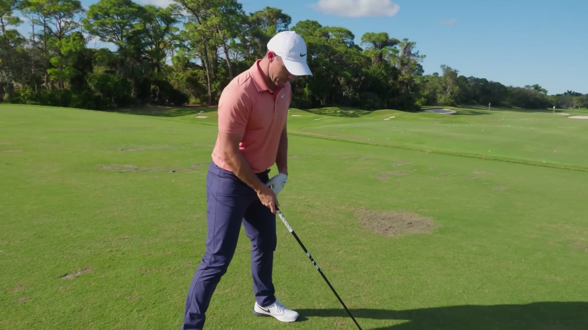
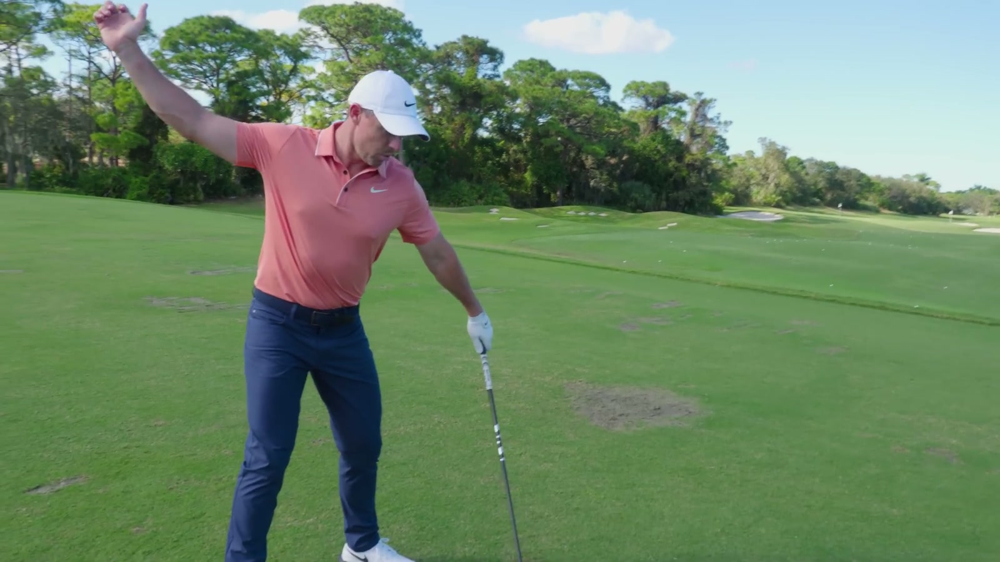
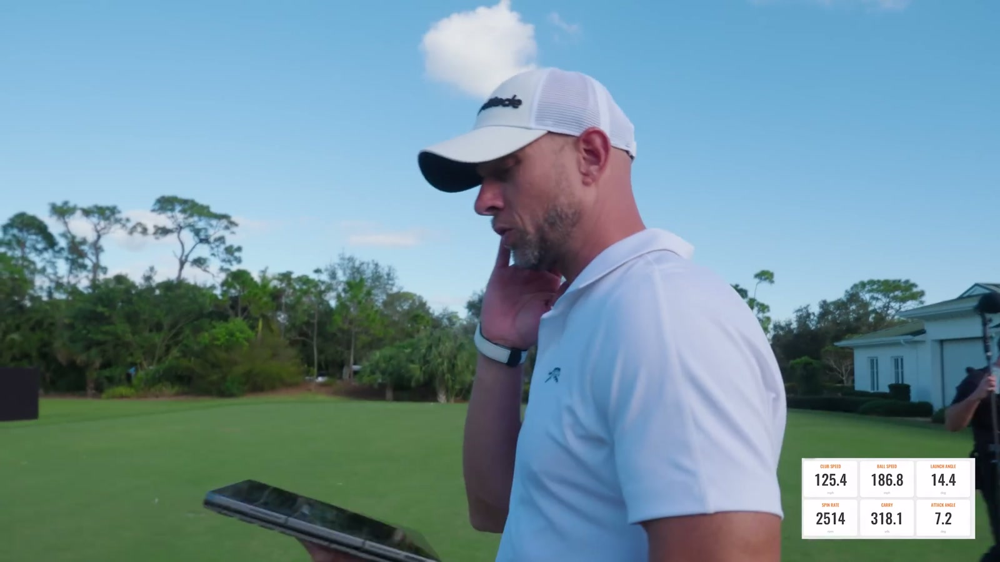
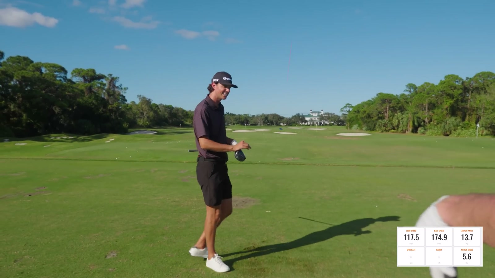
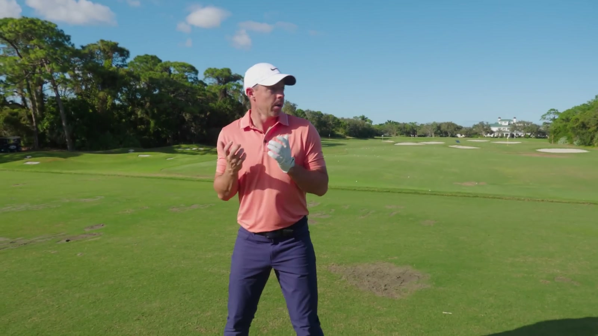

Executive summary
Learn to move the club fast before asking the motion to be accurate
Rory McIlroy's central idea is a sequencing rule for practice. During a speed session, the target, strike pattern, and ball flight are deliberately demoted. The immediate task is to discover a faster motion. Once the nervous system has experienced that speed, the player can restore balance, center contact, and dispersion. Trying to make a perfect golf swing while simultaneously finding a new maximum keeps the old speed ceiling in place.
His setup for a hard swing places the ball farther forward, widens the base by moving the trail foot, and aligns the lead arm with the shaft. His main downswing feel is to clear aggressively and feel as if the trail hip hits the ball. Later, he connects the sequence to a medicine-ball throw: pressure shifts, the lead side plants, and the body sends mass through the target.
Evidence boundary. These are launch-monitor readings spoken or shown during one informal range session, not a controlled before-and-after study. The camera, captions, and monitor occasionally round differently. The article reports approximate displayed values and does not claim that every golfer will gain the same speed.
The training system
Speed, control, and transfer are three different jobs
1. Create speed
Remove the target, accept poor strike and dispersion, and learn what a genuinely faster motion feels like.
2. Reintroduce control
Once the ceiling rises, bring center contact, balance, launch, spin, and a playable start line back into the swing.
3. Raise cruising speed
The goal is not to swing at the absolute maximum on course. A higher maximum makes the normal swing faster at the same relative effort.
Rory describes his own change in exactly these terms. When he first worked with the TaylorMade team, his normal ball speed was around 179–180 mph. He now says he can cruise around 186 mph. His argument is that repeatedly lifting the top speed also moves the sustainable baseline.
Setup for maximum speed
Move the ball forward and build a base that can accept force
- Ball position moves toward the lead foot. Rory is already tilted behind the ball, then places it even farther forward when he wants maximum speed.
- The trail foot widens the stance. The lead foot stays in place; the trail foot moves slightly wider to create a larger platform.
- Lead arm and shaft form one long line. This is Rory's visual reference at address, not a universal fitting rule.
- The backswing can begin faster. Rory has experimented with moving the club away more quickly because a faster backswing can support a faster return, but he does not present this as the main move.

Why the setup matters. Rory does not start by asking Grant to manufacture speed halfway through the downswing. He first changes the environment around the motion: more room to hit upward and a wider platform from which to rotate and push.
Lower-body sequence
The cue is "hit the ball with the right hip"
Rory's language is intentionally external and athletic. He wants to feel the lower body clearing as aggressively as possible so the upper body and club can release like a slingshot. Other players may describe the same intention as moving the lead knee out of the way, snapping the lead leg, or opening the pelvis. Rory's own cue is to send the trail hip toward the ball.
This should be read as a player feel, not a literal instruction to thrust the pelvis at the ball. The visible goal is an open, rotating body through impact with enough space for the arms and club to accelerate.

Speed mode versus golf mode
Missing the range can be acceptable when direction is not the training objective
Grant's first attempts still look like controlled golf swings. Rory notices that the target remains in his mind and asks him to stop protecting the shot. During Rory's own speed development, he sometimes hit balls outside the range. That would be a failure in normal practice, but in this narrowly defined drill it showed that he had stopped slowing down to preserve direction.
The distinction prevents a common category error:
- Speed acquisition asks: how fast can the system move?
- Skill practice asks: can the player start, curve, launch, and strike the ball as intended?
- On-course performance asks: what speed produces the best expected score from this target and penalty pattern?
Rory works on the first question in this session. He explicitly says the shot can be tightened later.
Launch-monitor progression
The numbers show ceiling discovery, not a fitting prescription
| Moment | Ball speed | Club speed | Carry / spin | What changed | Time |
|---|---|---|---|---|---|
| Rory · first warm-up | About 182–183 mph | Not clearly stated | About 320 yd; 2,300 rpm; 12° launch | Heel contact, but straight. Establishes a cold-session floor. | 2:17 |
| Rory · early speed | About 187 mph | About 125 mph | About 327 yd; 2,500 rpm | Forward ball, wider base, aggressive hip intent. | 3:08 |
| Grant · target removed | 172 → 174 → 175.5 mph | Not consistently read aloud in this sequence | Direction varies | Stops trying to hit a pretty shot and focuses on moving the club. | 5:12 |
| Rory · peak sequence | About 190–191 mph | About 127–127.5 mph | 337–341 yd; one shot near 2,200 rpm | Warmer, increasingly uninhibited swings while still retaining balance. | 7:56 |
| Grant · later sequence | About 174–175.5 mph | About 117–117.5 mph | One 174 mph shot carries about 302 yd | Wider base, stronger shift, and a more athletic jump-and-clear feel. | 10:14 |
| Rory · final ceiling | About 191 mph | About 127.7–128 mph | About 336–340 yd; one low-face shot near 2,400 rpm | Technique, strike, and target are temporarily cleared from attention. | 12:33 |

Coaching Grant
Rory changes intention before adding technical detail
Grant initially tries to reproduce Rory's visible setup: ball farther forward, stance wider, lower body clearing. Yet Rory keeps returning to intention. Grant still looks as though he has a target and is trying to make a golf swing. Rory wants him to experience a motion that is faster than his current idea of "hard."
Once Grant stops caring where the ball goes, his spoken ball-speed numbers progress from about 172 to 174 and then 175.5 mph. Later, a wider base and more forceful shift produce club-speed readings around 117–117.5 mph. The gains are modest compared with Rory's, but the session succeeds in revealing that Grant's perceived maximum was not his actual maximum.

Raise the ceiling
Maximum speed is useful because it changes what "easy" means
Rory is not arguing that tournament drives should be hit at 128 mph club speed. His performance model is relative. If 128 becomes available, a controlled swing at a lower percentage can still be faster than the old all-out swing. This is why he tracks the maximum even though his playing goal is a reliable cruising speed.
He mentions a prior Dubai session reaching roughly 196 mph ball speed and 130 mph club speed. In this video, he needs multiple swings to climb toward the high end. That warm-up curve matters: peak output is not the first swing, and fatigue eventually appears as well.
The useful equation: raise maximum capacity → preserve a larger reserve → play faster without operating at 100% effort. The session does not establish how many workouts or weeks are required; it only demonstrates the logic.
Athletic transfer
A shot-put medicine-ball throw gives the swing a whole-body image
Rory connects his golf feel to a medicine-ball drill. He pressures into the lead side, shifts into the trail side, plants, and throws through from the ground up. In the golf swing, he wants the ball, hip, and body mass to travel through together rather than the arms producing speed alone.
Jumping and throwing in the gym support this pattern because they train intent and sequencing without making the athlete solve clubface control at the same time. The drill is an analogy and conditioning tool, not proof that every player should copy Rory's exact pressure pattern.

A practical session
How to translate the lesson without copying Rory's speed
- Warm up progressively. Begin below maximum and use several stages before full effort; Rory's own speed rises over multiple swings.
- Record a baseline. Capture club speed, ball speed, strike location, launch, spin, and carry rather than judging by sound alone.
- Change one setup variable at a time. Test forward ball position and trail-foot width before stacking many swing thoughts.
- Use a simple athletic cue. Examples from the video are clearing the lead side, sending the trail hip through, or making a medicine-ball throw.
- Run a short no-target block. Use a safe, wide range and accept dispersion while measuring maximum movement speed.
- Restore strike and direction. After the speed block, reduce effort and observe whether cruising speed has moved without losing the center of the face.
- Stop when speed or coordination falls. More fatigued swings are not automatically more useful swings.
Safety boundary. Both players mention fatigue or soreness, and the video does not provide a medical screening, formal warm-up, rep prescription, or recovery plan. Max-effort driver and medicine-ball work should be scaled to the golfer's capacity and performed in a safe space; pain is not a speed cue.
My take
The breakthrough is permission, but the system keeps it useful
The most valuable moment is not Rory's 191 mph ball speed. It is his diagnosis that Grant is still trying to make a respectable golf swing. Grant needs permission to look worse temporarily in order to discover a movement he cannot access while protecting the target.
Permission alone would produce chaos. Rory surrounds it with structure: a stable setup, one lower-body cue, objective launch-monitor feedback, repeated attempts, and a later return to control. That combination turns "swing harder" from vague encouragement into a trainable process.
For a complementary look at decision making rather than maximum speed, see Scottie Scheffler vs Rory McIlroy: Three Holes, Three Decision Systems.
Sources and method
What this article is based on
- Grant Horvat Golf · Rory McIlroy Shares His Driving Secrets. Primary source for every setup cue, training principle, launch-monitor number, and athlete statement.
- The official video description, metadata, and chapter labels. Used to confirm the publication date, running time, source identity, and section boundaries.
Method: 357 public English-caption rows were reviewed against the 1080p video and official metadata. Six frames were exported at 1600x900. Launch-monitor values are reported approximately because captions and visible overlays sometimes round differently. Biomechanical language is identified as Rory's player feel rather than universal fact.